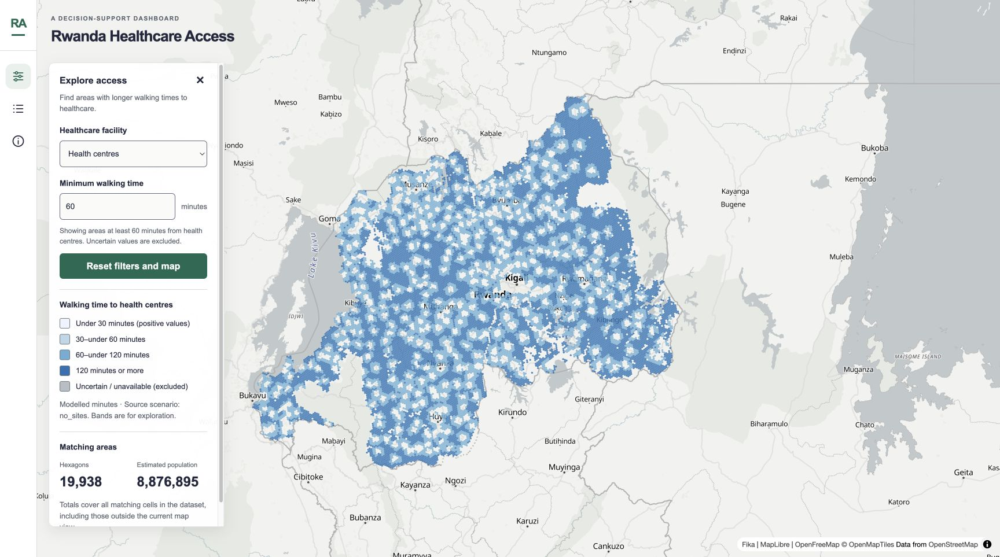

Mapping / Academic project
Rwanda Healthcare Access Explorer
An exploratory dashboard linking modeled walking times to healthcare facilities with estimated population across Rwanda.
- Contribution
- Dashboard design and implementation, spatial-data preparation and integration, vector-tile mapping, filtering, linked interactions, and source documentation.
- Evidence
- A deployed interactive application with three facility types, adjustable walking-time thresholds, linked area selection, population-ranked results, and reset and empty-result states. Summary totals cover all matching cells in the dataset, including those outside the current map view.
- Scope
- An academic, exploratory tool for shortlisting areas for further investigation. Walking times are modeled, not observed patient journeys; the source no_sites scenario meaning, data dates, and reuse terms remain unconfirmed. Population totals are estimates, cells are not clipped to Rwanda’s border, and zero travel times are excluded as uncertain. Population ranking is not an intervention-priority score or a validated facility-location recommendation.